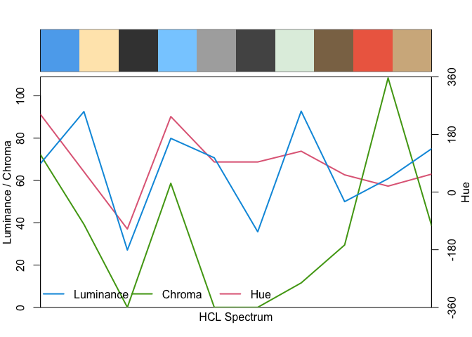
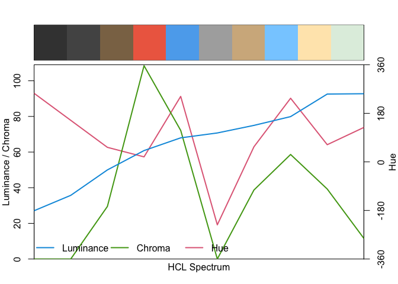
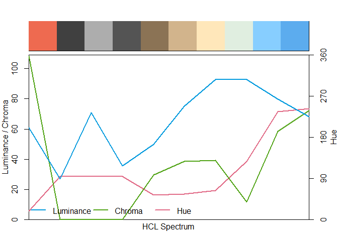
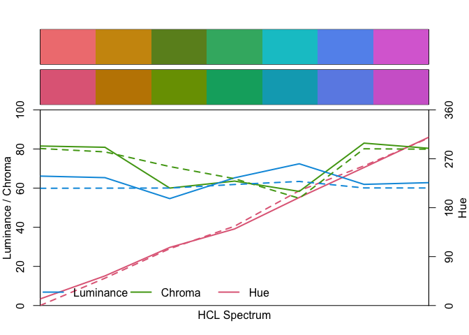

The goal of chromascope is to explore colours() and find interesting set of colours.
Installation
You can install the development version of chromascope like so:
# install.packages('devtools')
devtools::install_github('njtierney/chromascope')Example
chromascope provides functions to extract colour data from colours().
library(chromascope)
#>
#> Attaching package: 'chromascope'
#> The following object is masked from 'package:grDevices':
#>
#> col2rgb
# Extract the hex code for the colour "red"
col2hex("red")
#> [1] "#FF0000"
# Extract the hue, chroma, and luminance (hcl) data for the colour "red"
col2hcl("red")
#> h c l
#> [1,] 12.1744 179.049 53.24079
# Extract the red, green, and blue (rgb) data for the colour "red"
col2rgb("red")
#> r g b
#> [1,] 255 0 0
# Extract the hex code, hcl and rgb data for the colour "red".
colour_data("red")
#> # A tibble: 1 × 8
#> name hex hue chroma luminance red green blue
#> <chr> <chr> <dbl> <dbl> <dbl> <int> <int> <int>
#> 1 red #FF0000 12.2 179. 53.2 255 0 0Example for vectors of colours
chromascope can work with vectors as well.
col2hex(random_cols)
#> [1] "#5CACEE" "#FFE7BA" "#404040" "#87CEFF" "#ADADAD" "#545454" "#E0EEE0"
#> [8] "#8B7355" "#EE6A50" "#D2B48C"
col2rgb(random_cols)
#> r g b
#> [1,] 92 172 238
#> [2,] 255 231 186
#> [3,] 64 64 64
#> [4,] 135 206 255
#> [5,] 173 173 173
#> [6,] 84 84 84
#> [7,] 224 238 224
#> [8,] 139 115 85
#> [9,] 238 106 80
#> [10,] 210 180 140
col2hcl(random_cols)
#> h c l
#> [1,] 242.67437 7.216838e+01 67.98380
#> [2,] 63.68084 3.926813e+01 92.55687
#> [3,] 21.80629 3.930111e-03 27.09342
#> [4,] 235.86258 5.864406e+01 79.90310
#> [5,] 21.80629 1.025919e-02 70.72486
#> [6,] 21.80629 5.182067e-03 35.72415
#> [7,] 127.65937 1.154946e+01 92.74129
#> [8,] 53.88507 2.949128e+01 49.98626
#> [9,] 18.61190 1.084618e+02 60.84313
#> [10,] 56.07598 3.873112e+01 74.97572
colour_data(random_cols)
#> # A tibble: 10 × 8
#> name hex hue chroma luminance red green blue
#> <chr> <chr> <dbl> <dbl> <dbl> <int> <int> <int>
#> 1 steelblue2 #5CACEE 243. 72.2 68.0 92 172 238
#> 2 wheat1 #FFE7BA 63.7 39.3 92.6 255 231 186
#> 3 grey25 #404040 21.8 0.00393 27.1 64 64 64
#> 4 skyblue1 #87CEFF 236. 58.6 79.9 135 206 255
#> 5 grey68 #ADADAD 21.8 0.0103 70.7 173 173 173
#> 6 grey33 #545454 21.8 0.00518 35.7 84 84 84
#> 7 honeydew2 #E0EEE0 128. 11.5 92.7 224 238 224
#> 8 burlywood4 #8B7355 53.9 29.5 50.0 139 115 85
#> 9 coral2 #EE6A50 18.6 108. 60.8 238 106 80
#> 10 tan #D2B48C 56.1 38.7 75.0 210 180 140Visualise the colours on specplot() and swatchplot()
library(colorspace)
random_cols <- colour_data(random_cols)
swatchplot(random_cols$name)
specplot(random_cols$hex)
# Arrange the random colours based on the hue and visualise using specplot()
library(dplyr)
#>
#> Attaching package: 'dplyr'
#> The following objects are masked from 'package:stats':
#>
#> filter, lag
#> The following objects are masked from 'package:base':
#>
#> intersect, setdiff, setequal, union
random_cols |>
arrange(luminance) |>
pull(hex) |>
specplot()


Find nearest R colours
library(colorspace)
qual_cols <- qualitative_hcl(7)
qual_cols
#> [1] "#E16A86" "#C18500" "#799D00" "#00AB6E" "#00A9BE" "#6C8EE6" "#D169D0"
swatchplot(qual_cols)
near_qual_cols <- nearest_colour(qual_cols)
near_qual_cols
#> # A tibble: 7 × 3
#> name_base hex_base hex_input
#> <chr> <chr> <chr>
#> 1 lightcoral #F08080 #E16A86
#> 2 darkgoldenrod3 #CD950C #C18500
#> 3 olivedrab #6B8E23 #799D00
#> 4 mediumseagreen #3CB371 #00AB6E
#> 5 turquoise3 #00C5CD #00A9BE
#> 6 cornflowerblue #6495ED #6C8EE6
#> 7 orchid #DA70D6 #D169D0
library(dplyr)
near_qual_cols |>
pull(hex_base) |>
swatchplot(qual_cols)
